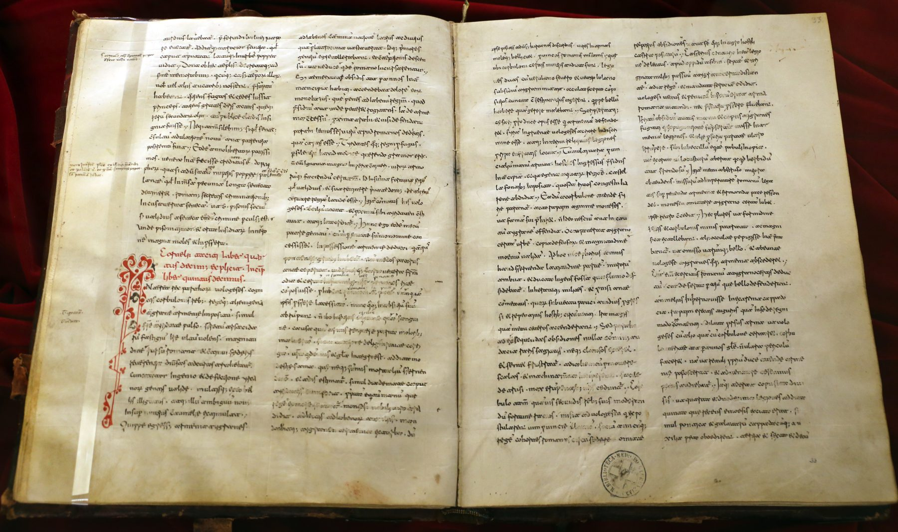
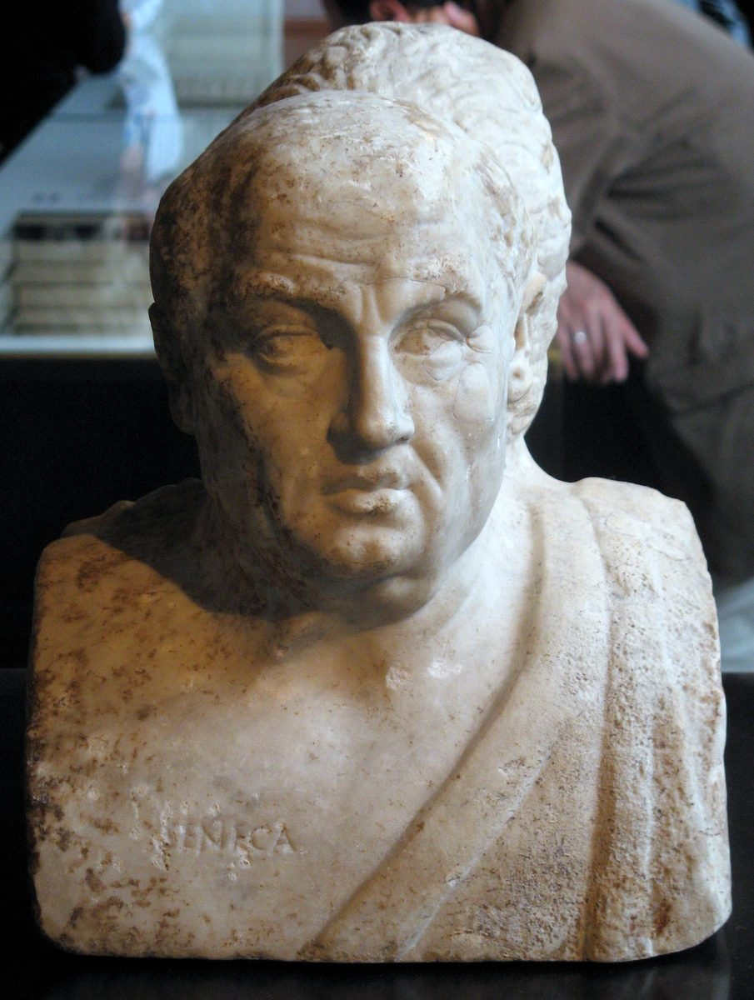

Unit 4 · Boudicca · Lesson 4
Tacitus and Cassius Dio: two writers, two purposes
Almost all that ancient writers tell us about Boudicca comes from two Roman senators who wrote long after her revolt. What did each one write, and why?
Year 11 Ancient History · Present with → or space · Read on a phone with R

Connect · 3 minutes · books closed · everyone writes · press K for the timer
Two Roman officials in Britain
Name the two Roman officials in Britain and what each controlled.
The Lesson 3 review item most of the class missed: listen, then fix your answer in a second colour.
The emperor’s army commander in the province.
The official who ran the province’s finances and taxes.
Keep the procurator in mind: today both of our writers have something to say about him.
Learning intentions and success criteria · 2 minutes
Today’s goals
- analyse Tacitus and Cassius Dio as sources for Prasutagus, Boudicca and the revolt
- compare their accounts, attributing each view precisely
- apply OVPRL to an extract from each writer
- compare them (a similarity and a difference) using attribution verbs and the right tense
- judge what each writer is reliable for
Syllabus outcomes: AH-11-05 analyses different types of sources for evidence to support a historical account or argument · AH-11-06 explains differing interpretations and representations of the past · AH-11-07 communicates historical understanding, applying historical knowledge, terms and concepts. Life Skills: AH-LS-08 uses sources to form conclusions about the past · AH-LS-11 communicates information about the past using historical terms and concepts.
Note-making · the routine for the whole course
How to structure your notes
questions and key terms, written after
short phrases, arrows (→ leads to), abbreviations (c. = about; T = Tacitus; D = Dio)
- 1A new lesson, a new pageA cue column about a quarter of the page wide; title and date at the top; room for a summary at the bottom.
- 2Listen and look, then writeDon’t copy while a slide is being explained. Phrases, not sentences; a source for every claim.
- 3Write your own notes at the ✎ checkpointThen compare with the model notes, one row at a time. Add what you missed in a second colour.
- 4Two other places for notes todayOVPRL notes go in the OVPRL routine on page 2 of your booklet; the comparison grid goes on your notes page.
- 5Finish with a three-sentence summaryOne checkpoint today: the two writers. Write the cue questions afterwards, with exam verbs: explain, compare, assess.
Key vocabulary · add to the unit word wall
Words for reading two writers side by side
| Directive verb (NESA) | Meaning, then what the answer must do |
|---|---|
| Compare | ‘Show how things are similar or different.’ — Both sources together, point by point. |
| Writing term | Meaning |
| Attribution verb | A verb that says who claims what, and how: reports, claims, asserts, attributes, argues. |
| Added for this lesson | Meaning |
| Omen (portent) | A strange event taken as a sign of something about to happen. |
| Content terms | Meaning |
|---|---|
| Governor / procurator | The emperor’s army commander and chief judge in a province (Suetonius Paulinus) / the official who ran its finances and taxes (Decianus Catus). |
| Epitome | A later summary of a longer work; Dio’s Book 62 survives mainly in a Byzantine epitome. |
| Composed speech | A speech written by an ancient historian for a character, showing the historian’s views. |
1 · Two writers · I do — think aloud: who, when, and how do their words reach us?
Two Roman senators, long after the revolt
- Roman senator; consul in 97 CE; wrote in Latin
- Agricola (98 CE): the life of his father-in-law, who served on Suetonius’s staff during the revolt
- Annals (after about 113 CE): Rome’s emperors from Tiberius to Nero, year by year
- Greek-speaking Roman senator from Bithynia (Asia Minor); consul again in 229 CE; wrote in Greek
- Roman History, in 80 books, from Aeneas to 229 CE; written about 200–222 CE
- Book 62 survives mainly in a summary (epitome) by Xiphilinus, a monk, made in 1071–78
Tacitus wrote about 100 years closer to the revolt. Does that make him more reliable?
Not on its own. Closer helps, but so does what each writer knew and why he wrote. Today’s question is always: reliable for what?
Notes checkpoint 1 of 1
The two writers
1 · Two writers · I do — think aloud: OVPRL on Tacitus
Tacitus on the will of Prasutagus: reliable for what?
Prasutagus, king of the Iceni, famed for his long prosperity, had made the emperor his heir along with his two daughters, under the impression that this token of submission would put his kingdom and his house out of the reach of wrong. But the reverse was the result, so much so that his kingdom was plundered by centurions, his house by slaves, as if they were the spoils of war. [One sentence, on what was done to Boudicca and her daughters, is left out here: Lesson 5 reads it.] All the chief men of the Iceni, as if Rome had received the whole country as a gift, were stript of their ancestral possessions, and the king’s relatives were made slaves. Roused by these insults and the dread of worse, reduced as they now were into the condition of a province, they flew to arms and stirred to revolt the Trinobantes and others …
Tacitus, a Roman senator, Annals, published after about 113 CE · trans. A. J. Church and W. J. Brodribb (1876)
He served his military apprenticeship in Britain to the satisfaction of Suetonius Paullinus, a painstaking and judicious officer, who, to test his merits, selected him to share his tent.
Tacitus, Agricola (98 CE) · trans. Church and Brodribb
- OOriginTacitus, a Roman senator, about 55 years after the revolt (he was a child in 60 or 61 CE). His father-in-law Agricola served on Suetonius’s staff.
- VValuePrasutagus “had made the emperor his heir along with his two daughters”; then the chain of wrongs that, Tacitus says, roused the Iceni and the Trinobantes.
- PPurposeA year-by-year history judging Rome’s rulers. He presents the revolt as provoked by Roman wrongs, “as if Rome had received the whole country as a gift”.
- RReliabilityReliable for the events and for how Romans explained them, but not for the Britons’ own motives, because no British account survives: “roused” is Tacitus’s explanation, not a Briton’s own words.
- LLimitationsOne side only; written long after; he names no source here; the family link may colour his view of Suetonius.
2 · Reading Dio · We do — supported reading · read together, then annotate
Cassius Dio: money, and a woman who led a war
[62.1] While this sort of child’s play was going on in Rome, a terrible disaster occurred in Britain. Two cities were sacked, eighty thousand of the Romans and of their allies perished, and the island was lost to Rome. Moreover, all this ruin was brought upon the Romans by a woman, a fact which in itself caused them the greatest shame. … [62.2] An excuse for the war was found in the confiscation of the sums of money that Claudius had given to the foremost Britons; for these sums, as Decianus Catus, the procurator of the island, maintained, were to be paid back. This was one reason for the uprising; another was found in the fact that Seneca, in the hope of receiving a good rate of interest, had lent to the islanders 40,000,000 sesterces that they did not want, and had afterwards called in this loan all at once and had resorted to severe measures in exacting it. But the person who was chiefly instrumental in rousing the natives and persuading them to fight the Romans, the person who was thought worthy to be their leader and who directed the conduct of the entire war, was Buduica, a Briton woman of the royal family and possessed of greater intelligence than often belongs to women. … In stature she was very tall, in appearance most terrifying, in the glance of her eye most fierce, and her voice was harsh; a great mass of the tawniest hair fell to her hips …
Cassius Dio, a Greek-speaking Roman senator, Roman History, written about 200–222 CE; Book 62 survives mainly in Xiphilinus’s summary (1071–78) · trans. E. Cary, Loeb Classical Library (1925)
Words: child’s play = Nero’s festivals and stage shows, which Dio has just described · confiscation = taking property away · procurator = the official in charge of the province’s money · sesterces = Roman coins · chiefly instrumental = most active in causing · tawniest = most golden-brown · that they did not want = Cary notes that the Greek here is uncertain: another editor reads “at their request”
How does Dio open the story for Roman readers? As a disaster and a shame: it struck while Rome played at Nero’s games, and it was brought about “by a woman”.
What is the first reason Dio gives? Money: the procurator, Decianus Catus, said Claudius’s gifts to leading Britons had to be paid back.
And the second? More money: Seneca had lent the Britons 40 million sesterces (in Cary’s translation), then called the loan in all at once, harshly.
Who, for Dio, did most to start the war? Buduica (Boudicca) herself: a royal woman who roused the Britons and directed the whole war.
Could Dio have seen her? No: he was born about a century after her death, and we do not know where his description comes from.
2 · Reading Dio · We do — the class OVPRL · cold call each letter
Dio as a source: reliable for what?

Dio’s point of view is thoroughly Roman.
E. Cary, Introduction to his Loeb translation (vol. I, 1914)
- OOriginCassius Dio, a Greek-speaking Roman senator, writing about 200–222 CE: about 150 years after the revolt. Book 62 survives mainly in Xiphilinus’s summary.
- VValueDio’s explanation (Catus’s demand, Seneca’s loan, Boudicca’s leadership) and the only ancient description of her.
- PPurposeA history of Rome from Aeneas to his own day. He frames the revolt as a disgrace of Nero’s reign, “brought upon the Romans by a woman”.
- RReliabilityReliable for how Romans of Dio’s day explained and imagined the revolt, but not for exact details or her words, because he wrote about 150 years later and names no source.
- LLimitationsA summary, so not always Dio’s own words; one Roman view; no British voice; “eighty thousand” is a claim, not a count.
2 · Reading Dio · We do — the class fills the grid · cold call each row
Why did the Britons rise? Tacitus and Dio side by side
| Cause | Tacitus, Annals 14.31–32, 14.35 | Dio, Roman History 62.1–2 |
|---|---|---|
| The procurator, Decianus Catus | goaded the province “into war by his rapacity” (14.32) | claimed Claudius’s gifts “were to be paid back” (62.2) |
| Other money | the chief men “stript of their ancestral possessions”; no loans | Seneca’s loan of 40,000,000 sesterces (in Cary’s translation), called in “all at once” |
| Prasutagus and his family | the will ignored; kingdom plundered; Boudicca “scourged” and her daughters “outraged” (14.31) | not mentioned |
| Veterans, colony and temple | veterans drove people from their houses and farms; the temple “a citadel, as it seemed, of perpetual tyranny” | not given as causes |
| Boudicca’s part | she rallies the Britons (“went up to tribe after tribe”, 14.35), after the wrongs | “chiefly instrumental in rousing the natives” |
Keep this grid on your notes page: today’s comparison sentences come from it.
2 · Reading Dio · We do — one sentence from the speech Dio gives Boudicca
Who is really speaking in the bracket?
I thank thee, Andraste, and call upon thee as woman speaking to woman; for I rule over no burden-bearing Egyptians as did Nitocris, nor over trafficking Assyrians as did Semiramis (for we have by now gained thus much learning from the Romans!), much less over the Romans themselves as did Messalina once and afterwards Agrippina and now Nero …
Cassius Dio, Roman History, about 200–222 CE (Xiphilinus’s summary) · trans. E. Cary (1925)
Words: Andraste = a goddess of the Britons · Nitocris, Semiramis = queens of Egypt and Assyria in Greek histories · Messalina, Agrippina = wives of the emperor Claudius
Who is really speaking in the bracket?
Dio. A Briton of 60 or 61 CE would hardly compare herself with queens from Greek histories, then joke that she learned of them “from the Romans”. The learning is Dio’s: he composed the speech.
So what is the speech good evidence for?
For Dio’s view of Boudicca, of Britons and of Nero’s Rome (she mocks Nero as a woman), not for her own words.
Check for understanding · hinge question · 3 minutes · hold up your A, B, C or D card on “3, 2, 1, show”
Which statement about Dio’s speech for Boudicca is most accurate?
- AIt records her exact words, as a Roman witness reported them
- BIt copies her words from a British record made at the time
- CIt translates into Greek a speech that Tacitus wrote earlier
- DIt gives her words that Dio composed, as ancient historians often did
A is wrong: no witness is named, and Dio wrote about 150 years later. B is wrong: no British written account survives. C is wrong: Tacitus gives Boudicca a different, much shorter speech, in which she fights ‘as one of the people’ (Annals 14.35), and Dio does not use it. D: the bracket in 62.6 shows Dio’s own learning in her mouth.
3 · You do · Writing focus · 7 minutes · I do → We do → apply
Writing focus: say what each writer does, in the right tense
Compare: ‘Show how things are similar or different.’ NESA, Glossary of key words
Give each writer a precise attribution verb (reports, states, claims, presents … as, attributes … to) in the present tense: the book still says it. What happened stays in the past.
Not: “Tacitus said that Boudicca is fighting as one of the people.”
Worked example · written for this lesson
Both writers give Boudicca a composed speech, but whereas Tacitus presents her as a wronged mother fighting ‘as one of the people’ (Annals 14.35), Dio presents a queen ‘most terrifying’ in appearance (62.2).
Both marks the similarity
but whereas turns to the difference
present-tense verbs for what each writer does
Both writers report omens before the disaster. Build one sentence that starts with Both: a precise verb for each writer, in the present tense.
Tacitus, Annals 14.32“… the statue of Victory at Camulodunum fell prostrate and turned its back to the enemy, as though it fled before them.”
Dio, Roman History 62.1“… houses were seen under the water in the river Thames, and the ocean between the island and Gaul once grew blood-red at flood tide.”
Both writers report omens of the disaster: Tacitus records that the statue of Victory at Camulodunum ‘fell prostrate and turned its back to the enemy’ (Annals 14.32), and Dio reports that the sea ‘grew blood-red at flood tide’ (62.1).
Write your similarity first, with a precise verb for each writer: “Both writers …: Tacitus reports that …, and Dio states that …” Present tense for each writer; past tense for what happened. Stage 6: add the difference in the same sentence with whereas. Your Writing toolkit (booklet pages 3–4): attribution verbs.
3 · You do · 4 minutes · in the OVPRL routine on page 2 of your booklet · press K for the timer
Your turn: OVPRL on two new extracts
Rousing each other by this and like language, under the leadership of Boudicea, a woman of kingly descent (for they admit no distinction of sex in their royal successions), they all rose in arms. They fell upon our troops, which were scattered on garrison duty, stormed the forts, and burst into the colony itself, the head-quarters, as they thought, of tyranny. In their rage and their triumph, they spared no variety of a barbarian’s cruelty.
Tacitus, Agricola, the life of his father-in-law (98 CE) · trans. Church and Brodribb
Words: this and like language = the Britons’ complaints against Roman rule, which Tacitus has just reported · kingly descent = a royal family · garrison duty = guarding forts
For what treatment is there of the most shameful or grievous sort that we have not suffered ever since these men made their appearance in Britain? Have we not been robbed entirely of most of our possessions, and those the greatest, while for those that remain we pay taxes? Besides pasturing and tilling for them all our other possessions, do we not pay a yearly tribute for our very bodies?
Cassius Dio, Roman History, about 200–222 CE (Xiphilinus’s summary) · trans. E. Cary (1925)
Words: grievous = causing great pain · pasturing and tilling = grazing animals and ploughing · tribute = a tax paid to a ruler
Neither extract was analysed in class: apply the routine yourself. One line for each letter, in your own words. Quote two or three words for Value. For Reliability: “reliable for … but not for … because …”
Use the author cards (the two writers) and the first words: “Written by … in …” · “It shows …” · “He wanted …” · “It cannot tell us …”
Add one problem to each column that the other writer does not share. What does Tacitus’s word “barbarian” show about his perspective?
3 · You do · check your notes · 1 minute · add what you missed in a second colour
Check your OVPRL notes on the new extracts
| OVPRL | Tacitus, Agricola 16 | Dio, Roman History 62.3 |
|---|---|---|
| Origin | Tacitus’s earlier book (98 CE), the life of his father-in-law: about 37 years after the revolt | words Dio gives Buduica in a speech, written about 200–222 CE (about 150 years after); read in Xiphilinus’s summary |
| Value | the outline of the rising: led by “a woman of kingly descent”; troops attacked, forts stormed, the colony entered | Dio’s idea of the Britons’ grievances: lost possessions, taxes, “a yearly tribute for our very bodies” |
| Purpose | to honour Agricola: the revolt is the setting for his first service; written for Romans (“our troops”) | to explain, through her mouth, why the Britons fought, as composed speeches let ancient historians do |
| Reliability | reliable for the outline and for a Roman senator’s view of the rising, but not for the Britons’ side, because he calls them barbarians and no British account survives | reliable for what a Roman senator of Dio’s day thought the Britons resented, but not for Buduica’s words, because Dio composed the speech |
| Limitations | very brief; the causes only hinted at (“this and like language”); a book written in praise of Agricola | composed, about 150 years later, and read in a summary; general complaints, not the events of 60 or 61 CE |
Accept other answers that say what each writer is reliable for, with a reason from origin or purpose.
3 · You do · 12 minutes · deconstruct first · then write · press K for the timer
Compare Tacitus’s and Dio’s explanations of the revolt.
Deconstruct it: what does this question ask you to do?
- Verb
- compare: show how they are similar and how they differ, point by point
- Topic
- their explanations: why each says the revolt broke out (causes, not the battle)
- Limits
- today’s extracts from Tacitus and Dio only; the revolt of 60 or 61 CE
- Do
- three sentences: a similarity, a difference, a reason for the difference (from origin or purpose), each writer with a precise verb
- A similarity, with a precise verb for each writer.
- A difference, with whereas or however.
- A reason for the difference, from your OVPRL notes, hedged: may, probably.
Assess two textual problems for the causes of the revolt: Dio’s Book 62 survives mainly in a later summary, and one word in 62.2 is doubtful (‘that they did not want’ or ‘at their request’). Which matters more, and why?
Check first: which tense for what Dio does, and which for what Catus did?
Present for the writer (Dio states); past for the event (Catus demanded the money back).
“Both writers …: Tacitus reports that …, and Dio states that … However, whereas Tacitus presents …, Dio attributes … to … This difference may be because …”
3 · You do · after you write · compare yours with a model
A model comparison: Tacitus and Dio on the causes
Both writers blame the procurator, Decianus Catus: Tacitus reports that he goaded the province ‘into war by his rapacity’ (Annals 14.32), and Dio states that Catus demanded back the sums Claudius had given to leading Britons (62.2). However, whereas Tacitus presents the plunder of Prasutagus’s kingdom, the outrages against his family and the seizures by the veterans at Camulodunum as what roused the Britons (14.31), Dio attributes the rising to money, including Seneca’s loan of 40,000,000 sesterces (in Cary’s translation), called in ‘all at once’ (Cary translates a doubtful phrase as ‘that they did not want’; another editor reads ‘at their request’), and to Buduica herself, ‘chiefly instrumental in rousing the natives’ (62.2). This difference may reflect when and why each wrote: Tacitus, about 55 years later, judges Rome’s rule through the wrongs of its officials and soldiers, whereas Dio, writing about 150 years later in an account that survives mainly as a summary, presents the revolt as a disgrace of Nero’s reign, brought about by his adviser’s greed and ‘by a woman’.
Finish your notes If time · or at home
Summary: three sentences
- Who were the two writers, and when did they write?
- What does each blame for the revolt?
- What is each writer reliable for?
Our two main written sources for the revolt are Tacitus, a Roman senator who published the Annals about 55 years after it, and Cassius Dio, a Greek-speaking Roman senator who wrote about 150 years after it, in a book that survives mainly as a later summary. Both blame the procurator, Decianus Catus, but Tacitus stresses the outrages against Prasutagus’s family and the veterans, whereas Dio stresses money, including Seneca’s loan, and Boudicca’s own leadership. Each is reliable for how Romans explained the revolt rather than for what the Britons thought, since no British account survives.
Check · gesture vote · 3 minutes · thumbs on “3, 2, 1, show”
“Tacitus is more reliable than Dio.”
Thumbs up: agree · sideways: it depends · down: disagree. Then be ready to answer: reliable for what?
For the events and the causes Romans gave, Tacitus is probably the stronger witness: he wrote about 100 years closer, his father-in-law was on Suetonius’s staff, and his own words survive, not a summary. But neither is reliable for what the Britons themselves thought, because both were Roman senators and no British account survives; and Dio may preserve a detail Tacitus leaves out, such as Seneca’s loan.
Exit ticket · 4 minutes · before you leave
Fix the verb and the tense
“Dio said that Seneca lends the Britons money they do not want.”
A precise verb in the present tense for what Dio does (reports, or claims, since no other source confirms it) and the past tense for what Seneca did: Dio claims that Seneca had lent the islanders 40,000,000 sesterces (in Cary’s translation) ‘that they did not want’ (62.2: Cary’s translation of a doubtful phrase; another editor reads ‘at their request’).
Then check yourself against today’s three “I can” statements. Next lesson: why did the Iceni revolt? Its sources describe violence, including against women: they are read with care, and you can speak to your teacher beforehand.
Practice and review · 1 of 4 · true, false, justify
True or false? Justify your answer
- 1Tacitus saw the revolt himself and wrote about it soon after. False — he was a child in 60 or 61 CE, and he published the Annals after about 113 CE, about 55 years later.
- 2Both Tacitus and Dio blame the procurator, Decianus Catus. True — Tacitus for his “rapacity” (14.32); Dio for demanding back Claudius’s gifts (62.2).
- 3Tacitus says Seneca’s loan helped to cause the revolt. False — only Dio mentions Seneca’s loan (62.2).
- 4We can read Dio’s Book 62 exactly as he wrote it. False — it survives mainly in a summary made by the monk Xiphilinus in 1071–78.
- 5Dio is the only ancient writer to describe what Boudicca looked like. True — and he was born about a century after her death, so we do not know where his picture of her comes from.
- 6Dio’s speech for Boudicca records her exact words. False — Dio composed it, as ancient historians often did; the bracket about learning “from the Romans” gives him away.
Practice and review · 2 of 4 · writing · attribution verbs, tense, compare
Write it as a historian
- “Tacitus said that the veterans drive people out of their houses.”
- “Dio says that two cities are sacked.”
- “Tacitus wrote that Prasutagus makes the emperor his heir.”
1. Tacitus reports that the veterans ‘drove people out of their houses’ (Annals 14.31). 2. Dio reports that two cities were sacked (62.1). 3. Tacitus records that Prasutagus ‘had made the emperor his heir along with his two daughters’ (Annals 14.31).
Tacitus, Annals 14.37: “Boudicea put an end to her life by poison.” · Dio, Roman History 62.12: “… Buduica fell sick and died. The Britons mourned her deeply and gave her a costly burial …”
Both writers report that Boudicca died after the battle, but whereas Tacitus states that she ‘put an end to her life by poison’ (Annals 14.37), Dio reports that she ‘fell sick and died’ and was mourned with a costly burial (62.12). Since neither names his source, a historian can say only that the ancient accounts disagree about how she died.
Practice and review · 3 of 4 · extension · assess
Two problems with our sources
Assess two textual problems for the causes of the revolt: Dio’s Book 62 survives mainly in a later summary, and one word in 62.2 is doubtful (‘that they did not want’ or ‘at their request’). Which matters more, and why?
The Epitomes, on the other hand, while they often repeat entire sentences of Dio verbatim, or nearly so … must, nevertheless, be regarded as essentially paraphrases.
E. Cary, Introduction to his Loeb translation of Dio (vol. I, 1914)
- A judgement of degree: which problem matters more for the causes, and how much more.
- What each problem puts in doubt: the summary, whose words and emphasis we read; the doubtful word, whether Seneca’s loan was forced on the Britons or sought by them.
- A weighing: which cause rests on the doubtful point, and which survive whichever reading is right.
- Hedges that match the evidence (may, probably).
Practice and review · 4 of 4 · cover your notes and answer from memory
Quick checks
- When did Tacitus and Dio write, and how long after the revolt? Tacitus: the Annals, after about 113 CE, about 55 years after. Dio: the Roman History, about 200–222 CE, about 150 years after.
- What links Tacitus to Suetonius Paulinus? His father-in-law, Agricola, served on Suetonius’s staff in Britain at the time of the revolt (Agricola 5).
- How does Dio’s Book 62 survive, and why does that matter? Mainly in Xiphilinus’s summary (1071–78), so we cannot always be sure the words are Dio’s.
- What do both writers blame for the revolt? The procurator, Decianus Catus: his “rapacity” (Tacitus); his demand that Claudius’s gifts be paid back (Dio).
- What does each writer stress that the other does not? Tacitus: the outrages against Prasutagus’s family, the veterans and the temple. Dio: Seneca’s loan and Boudicca’s leadership.
- What does compare ask for? NESA: ‘Show how things are similar or different.’ In History: similarities and differences, point by point, then which matters most.
Sources and credits
Where everything comes from
Tacitus, Annals 14.31, 14.32, 14.35, 14.37 and Agricola 5: trans. A. J. Church and W. J. Brodribb (public domain), Perseus Digital Library (CC BY-SA 3.0 US). Cassius Dio, Roman History 62.1–2, 62.6, 62.12: trans. E. Cary (Loeb, vol. VIII, 1925), LacusCurtius (public domain in the US; quoted briefly). E. Cary, Introduction to Dio’s Roman History (Loeb, vol. I, 1914), LacusCurtius (quoted briefly).
Facts: J. Lendering, “Tacitus”, Livius.org; University of Warwick, Warwick Classics Network, “Sources for Boudica” and “Boudica’s Revolt”; R. Pearse, “Tacitus and his manuscripts”; Staatliche Museen zu Berlin, Sammlungen Online, SK 391. Time line drawn for this lesson. The NESA Glossary of key words (definitions quoted word for word).
Outcomes and content: NSW Education Standards Authority (NESA), Ancient History 11–12 Syllabus (2024). © NESA.
- Tacitus, Annals, the end of Book 14: the 11th-century manuscript in Florence (Biblioteca Medicea Laurenziana, Plut. 68.2) · Photo: Sailko · CC BY 3.0 · source
- Seneca, named on the stone: one side of a double portrait with Socrates (Antikensammlung Berlin, SK 391) · Photo: Mark Landon / Wikimedia Commons · CC BY 4.0 · source
_e_apuleio_(de_magia,_metamorphoseon,_florida),_montecassino_XI_secolo_(pluteo_68.2).jpg){kind=link}
_03.jpg){kind=link}
All images are public domain or openly licensed, and were resized or cropped for the web. Each is shared under the licence shown.